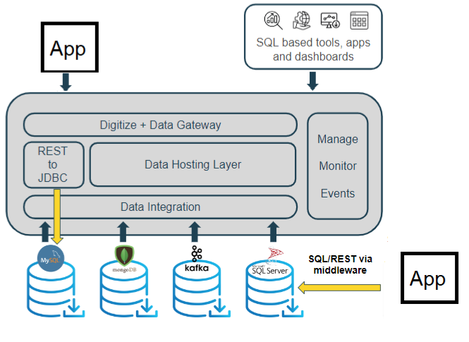

The REST Manager API and UI tools enable management of the Smart Cache cluster in Kubernetes deployments, providing typical information (such as parameters and responses) for each operation. This API enables administration of local, remote, and cloud-based application environments.
The GigaSpaces CLI enables users to administer local, remote, and cloud-based application environments, and for maintenance tasks. The CLI is based on the REST Manager API.
The Java SDK offers the best expected performance, with full coverage of Space interfaces and functions.
Smart Cache supports C# on .NET Framework and .NETCore so that developers can perform all required operations within the Space in .NET.
Server-side Java and client-side .Net operations available in Java can be performed in .NET.
The data is saved in Java within the Space. The .NET Integration supports C# on both .NET Framework and .NETCore.
To connect with the Space, the GigaSpaces JDBC API allows applications to interact with the Space, using JDBC or ODBC drivers. A query processor transparently translates SQL queries into legal Space operations. No integration is required, the application can just point to the GigaSpaces JDBC driver like any other JDBC driver.
See JDBC V1 Driver - In-Memory Data Grid and ODBC/JDBC V3 Data Gateway

Smart Cache is cloud native and can be deployed on any public, private cloud or hybrid environment. Key features of this deployable anywhere approach to out-of-the-box, fully agnostic cloud management functionality include:
Easy deployment and provisioning across any scale, on cloud, on-premises and hybrid environments
Hot rolling and automated deployment, upgrading, monitoring, scaling and recovery
Support of Kubernetes, Red Hat OpenShift and alternative elastic orchestration systems, with no need for third-party components, reducing TCO and enabling the handling of unexpected peaks.
Efficient and cost-effective data replication across regions/clouds or between on-premises and cloud deployments.